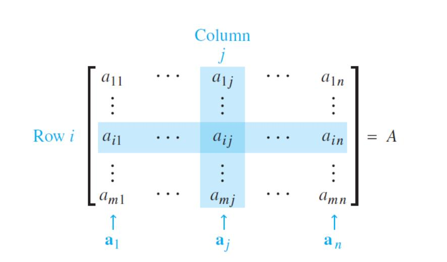

若\$A\$是\$m \times n\$矩阵, 即有\$m\$行\$n\$列的矩阵,
\$A\$的第\$i\$行第\$j\$列的元素用\$a_{ij}\$表示称\$A\$的\$(i, j)\$元素,
\$A\$的各列是\$\mathbb{R}^m\$的向量用(黑体字母) \$\boldsymbol{a}_1, \cdots, \boldsymbol{a}_n\$表示.
当我们特别注意\$A\$的各列时, 我们写成 \$ A =
\begin{bmatrix}
\boldsymbol{a}_1 \;\; \boldsymbol{a}_2 \; \cdots \; \boldsymbol{a}_n
\end{bmatrix} \$,
注意\$a_{ij}\$是第\$j\$个列向量\$\boldsymbol{a}_j\$(从上面算起)的第\$i\$个元素.

\$A=\begin{bmatrix}a_{ij}\end{bmatrix}\$的对角线元素是 \$a_{11}, a_{22}, a_{33}, \cdots\$, 它们组成\$A\$的主对角线.
对角矩阵是一个方阵, 它的非对角线元素全是\$0\$.
元素全是零的\$m \times n\$矩阵称为零矩阵, 用\$ \boldsymbol{0}\$表示.
\$ \boldsymbol{0}\$的维数通常可由上下文知道, 否则我们就用\$ \boldsymbol{0}_{m \times n} \$表示.
我们称两个矩阵相等, 若它们有相同的维数(即有相同行数和列数), 而且对应元素相等.
若\$A\$与\$B\$都是\$m \times n\$矩阵, 则和\$A+B\$也是\$m \times n\$矩阵, 它的各列是\$A\$与\$B\$对应列之和,
因列的向量加法是对应元素相加, \$A+B\$的每个元素也就是\$A\$与\$B\$的对应元素相加.
仅当\$A\$与\$B\$有相同维数, \$A+B\$才有定义.
若\$r\$是标量而\$A\$是矩阵, 则标量乘法\$rA\$是一个矩阵, 它的每一列是\$A\$的对应列的\$r\$倍. 与向量相同, 定义\$-A\$为\$(-1)A\$而\$A-B\$为\$A+(-1)B\$.
设\$A, B, C\$是相同维数的矩阵, \$r\$与\$s\$为数, 则有 $$ \begin{align} a.\quad & A + B = B + A \\ b.\quad & (A+B)+C = A+(B+C) \\ c.\quad & A + 0 = A \\ d.\quad & r(A+B) = rA+rB \\ e.\quad & (r+s)A = rA+sA \\ f.\quad & r(sA) = (rs)A \end{align} $$
###段落内容###